Truth Table¶
Description¶
A Vector Boolean function  can be uniquely represented by its Truth Table which is a matrix with
can be uniquely represented by its Truth Table which is a matrix with  rows and m columns whose elements are the values of F taken on all possible vector of 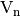 ordered lexicographically.
rows and m columns whose elements are the values of F taken on all possible vector of 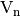 ordered lexicographically.
Let , if we take into account the one-to-one mapping of onto the set of integers, we are able to define any vector Boolean function by the corresponding set of values:
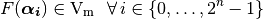
The matrix with rows and  columns will be referred as the Truth Table of F and will be generally written as
columns will be referred as the Truth Table of F and will be generally written as  :
:
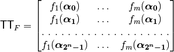
each 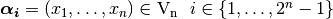 is a vector whose decimal equivalent is 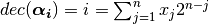, and all the vectors of can be listed so that 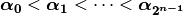.
As a total order is defined over the assignments (inputs) of the Vector Boolean Function, the Truth Table can be uniquely represented by this matrix. Any function F can be uniquely described by its Truth Table 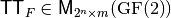 (or by the Truth Tables of its coordinate functions  ) and it holds that:
) and it holds that:
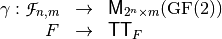
is an isomorphism between the vector spaces 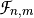 and 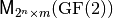, so that  .
.
The Truth Table for an n-variable Boolean function f should be in
lexicographical form, i.e., 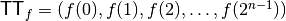. Since the
Truth Table length might be too large, we represent it in hexadecimal
rather than in binary notation. The hexadecimal Truth Table is obtained
by replacing each four bits by their corresponding
hexadecimal form. For instance, to enter 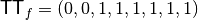
one should just write  .
.
The distance between two Vector Boolean functions  is defined as the number of bits that are different in their respective Truth Tables:
is defined as the number of bits that are different in their respective Truth Tables:
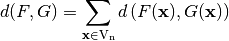
where 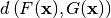 is the Hamming distance between the two vectors 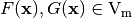.
The weight of a Vector Boolean function is equal to the distance between F and the corresponding zero Vector Boolean function  where 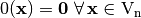.
where 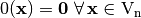.
In order to obtain certain characterizations (such as Autocorrelation Spectrum), it is important to take into account two additional representations related to the Truth Table: and  .
.
We will denote by of the matrix whose columns are the Truth Tables of the 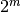 component functions of F. We will denote by of F the matrix whose columns are the sequence vectors of the component functions of F (Sometimes it is called the Polarity Truth Table).
Library¶
A VBF class can be initialized by a Boolean Matrix representing the Truth Table with the following method:
void puttt(const NTL::mat_GF2& T)
To obtain the Truth Table of a Vector Boolean function the following method must be used:
void TT(NTL::mat_GF2& X, VBF& F)
A VBF class can be initialized by a collection of strings separated by carriage returns defined by s with the following method:
void putHexTT(istream& s)
Each row must be the hexadecimal representation of the Truth Table of the coordinate functions of a Vector Boolean function. To obtain the Truth Table in hexadecimal representation the following method must be used:
void getHexTT(ostream& s)
Analogously a VBF class can be initialized by a collecting of strings with binary representation of the Truth Table of coordinate functions:
void putBinTT(istream& s)
To obtain its Truth Table in binary representation the following method must be used:
void getBinTT(ostream& s)
A VBF class can be initialized by a Boolean vector representing the decimal representation of the Truth Table of a Vector Boolean Function defined by a vector of outputs in lexicographic order, called d, and knowing the number of component Boolean functions m:
void putDecTT(const NTL::vec_long& d,const long& m)
To obtain the Truth Table in decimal representation the following method must be used:
NTL::vec_long getDecTT() const
To obtain the weight of a Vector Boolean function F the following method must be used:
void weight(long& w, VBF& F)
A VBF class can be initialized by a Boolean Matrix representing the Truth Table of their component functions with the following method:
void putltt(const NTL::mat_GF2& L)
To obtain the Truth Table of the component functions of a Vector Boolean function the following method must be used:
void LTT(NTL::mat_GF2& X, VBF& F)
A VBF class can be initialized by a Boolean Matrix representing its Polarity Truth Table with the following method:
void putctt(const NTL::mat_ZZ& C)
To obtain the Polarity Truth Table of a Vector Boolean function the following method must be used:
void CTT(NTL::mat_ZZ& X, VBF& F)
Example¶
The Truth Table of the NibbleSub S-box is the following:
[[1 1 1 0]
[0 1 0 0]
[1 1 0 1]
[0 0 0 1]
[0 0 1 0]
[1 1 1 1]
[1 0 1 1]
[1 0 0 0]
[0 0 1 1]
[1 0 1 0]
[0 1 1 0]
[1 1 0 0]
[0 1 0 1]
[1 0 0 1]
[0 0 0 0]
[0 1 1 1]
]
If we use a file with this matrix as the input of the following program, we can obtain its hexadecimal, binary and decimal representation, as well as the Truth Tables of the components functions and its Polarity Truth Table.
#include <iostream>
#include <fstream>
#include "VBF.h"
int main(int argc, char *argv[])
{
using namespace VBFNS;
VBF F;
NTL::mat_GF2 T;
ifstream input(argv[1]);
if(!input)
{
cerr << "Error opening " << argv[1] << endl;
return 0;
}
input >> T;
F.puttt(T);
input.close();
cout << "The hexadecimal representation is: " << endl;
F.getHexTT(cout);
cout << endl << "The binary representation is: " << endl;
F.getBinTT(cout);
cout << endl << "The decimal representation is: " << endl
<< F.getDecTT() << endl;
cout << endl << "The Truth Table of the component functions is: "
<< endl << LTT(F) << endl;
cout << endl << "The Polarity Truth Table is: "
<< endl << CTT(F) << endl;
return 0;
}
The output of this program would be:
The hexadecimal representation is:
a754
e439
8ee1
368d
The binary representation is:
1010011101010100
1110010000111001
1000111011100001
0011011010001101
The decimal representation is:
[14 4 13 1 2 15 11 8 3 10 6 12 5 9 0 7]
The Truth Table of the component functions is:
[[0 0 1 1 1 1 0 0 1 1 0 0 0 0 1 1]
[0 0 0 0 1 1 1 1 0 0 0 0 1 1 1 1]
[0 1 0 1 1 0 1 0 1 0 1 0 0 1 0 1]
[0 1 0 1 0 1 0 1 0 1 0 1 0 1 0 1]
[0 0 1 1 0 0 1 1 0 0 1 1 0 0 1 1]
[0 1 1 0 1 0 0 1 1 0 0 1 0 1 1 0]
[0 1 1 0 0 1 1 0 1 0 0 1 1 0 0 1]
[0 0 0 0 0 0 0 0 1 1 1 1 1 1 1 1]
[0 1 1 0 0 1 1 0 0 1 1 0 0 1 1 0]
[0 0 1 1 0 0 1 1 1 1 0 0 1 1 0 0]
[0 0 1 1 1 1 0 0 0 0 1 1 1 1 0 0]
[0 0 0 0 1 1 1 1 1 1 1 1 0 0 0 0]
[0 1 0 1 1 0 1 0 0 1 0 1 1 0 1 0]
[0 1 0 1 0 1 0 1 1 0 1 0 1 0 1 0]
[0 0 0 0 0 0 0 0 0 0 0 0 0 0 0 0]
[0 1 1 0 1 0 0 1 0 1 1 0 1 0 0 1]
]
The Polarity Truth Table is:
[[1 1 -1 -1 -1 -1 1 1 -1 -1 1 1 1 1 -1 -1]
[1 1 1 1 -1 -1 -1 -1 1 1 1 1 -1 -1 -1 -1]
[1 -1 1 -1 -1 1 -1 1 -1 1 -1 1 1 -1 1 -1]
[1 -1 1 -1 1 -1 1 -1 1 -1 1 -1 1 -1 1 -1]
[1 1 -1 -1 1 1 -1 -1 1 1 -1 -1 1 1 -1 -1]
[1 -1 -1 1 -1 1 1 -1 -1 1 1 -1 1 -1 -1 1]
[1 -1 -1 1 1 -1 -1 1 -1 1 1 -1 -1 1 1 -1]
[1 1 1 1 1 1 1 1 -1 -1 -1 -1 -1 -1 -1 -1]
[1 -1 -1 1 1 -1 -1 1 1 -1 -1 1 1 -1 -1 1]
[1 1 -1 -1 1 1 -1 -1 -1 -1 1 1 -1 -1 1 1]
[1 1 -1 -1 -1 -1 1 1 1 1 -1 -1 -1 -1 1 1]
[1 1 1 1 -1 -1 -1 -1 -1 -1 -1 -1 1 1 1 1]
[1 -1 1 -1 -1 1 -1 1 1 -1 1 -1 -1 1 -1 1]
[1 -1 1 -1 1 -1 1 -1 -1 1 -1 1 -1 1 -1 1]
[1 1 1 1 1 1 1 1 1 1 1 1 1 1 1 1]
[1 -1 -1 1 -1 1 1 -1 1 -1 -1 1 -1 1 1 -1]
]